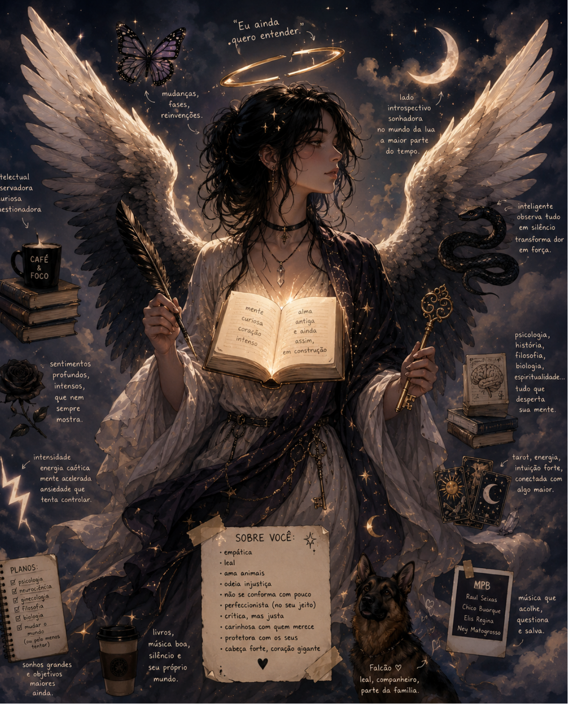
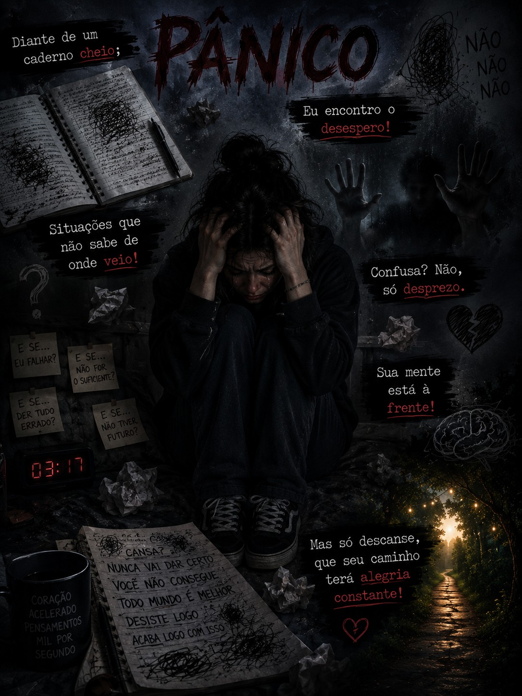
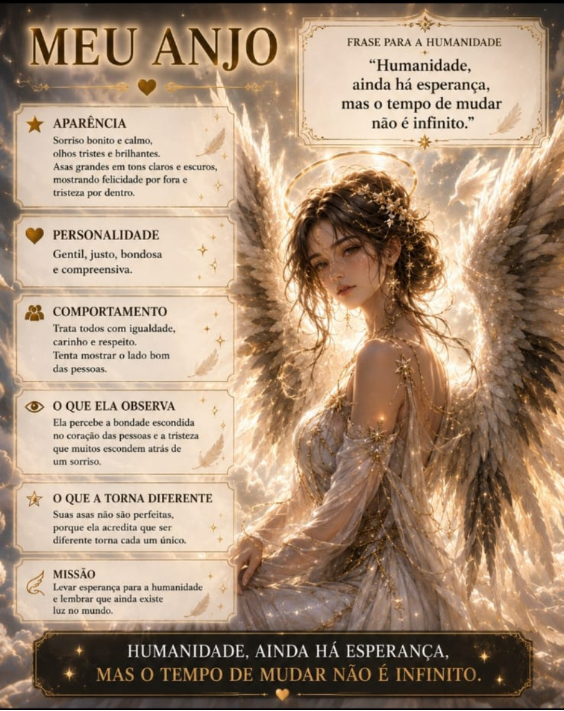
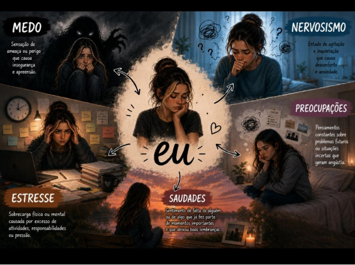
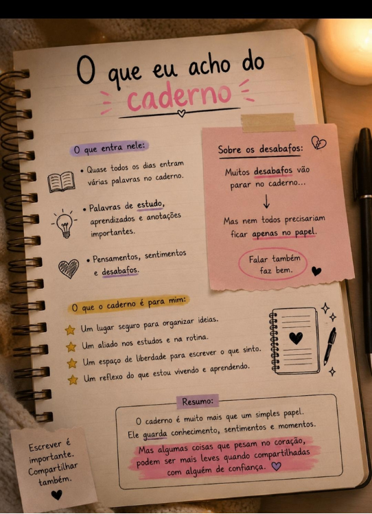
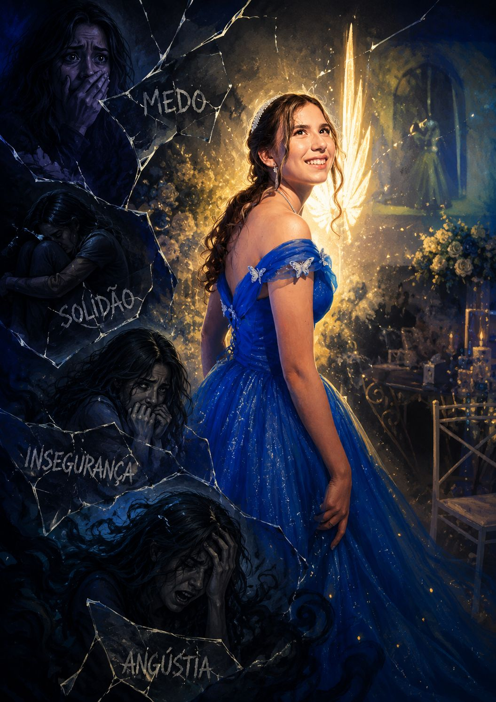
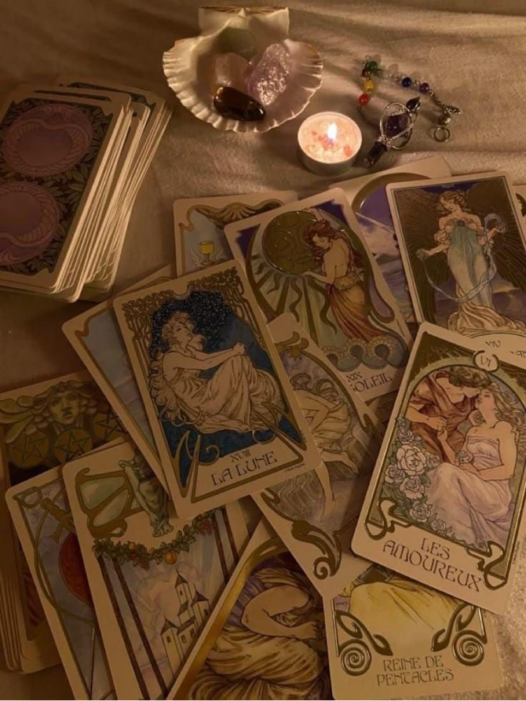
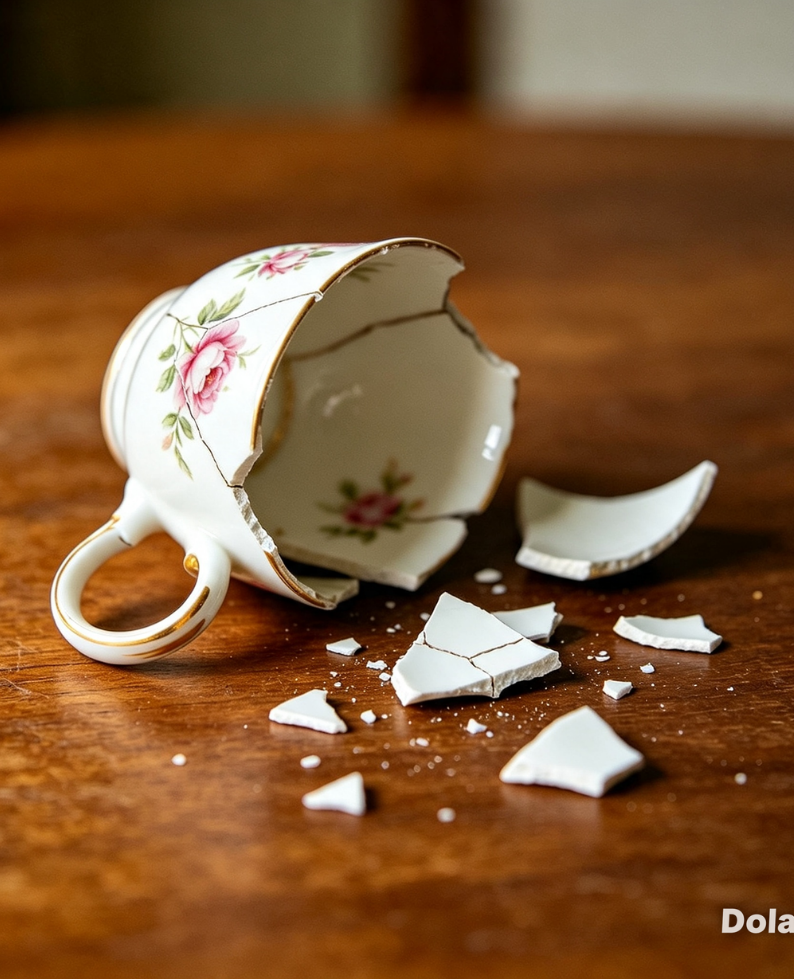

Mil Universos Sob o Mesmo Céu
Cada pessoa carrega consigo um universo de pensamentos, experiências, sentimentos e histórias. Muitas vezes, basta uma palavra, uma imagem ou uma história para descobrirmos algo novo sobre nós mesmos e sobre o mundo ao nosso redor.
A Filosofia nos convida a questionar, enquanto a Literatura nos permite transformar essas questões em palavras, personagens, histórias e diferentes formas de enxergar a vida.
Foi a partir desse encontro que nasceu este projeto: cinco olhares diferentes, cinco formas de criar e interpretar, reunidas sob o mesmo céu.
Cada voz carrega uma história.
Cada história, um universo.


🌕 Emily
Um reino guiado pela verdade, pela introspecção e pelo conhecimento. Aqui, cada pensamento é uma estrela distante a ser compreendida. Olhar para dentro é também enxergar o infinito. Buscar a verdade é o caminho, e o conhecimento é a luz que nunca se apaga.

Este anjo representa meu jeito curioso, intenso e observador. O livro simboliza minha vontade de aprender, a chave representa minha busca por respostas, a lua meu lado introspectivo e a borboleta minhas mudanças e recomeços.

Essa imagem representa as diferentes partes que formam quem eu sou. Cada pedaço mostra sentimentos, pensamentos, inseguranças, sonhos e mudanças que fazem parte da minha história.

O lápis quebrado representa minhas imperfeições e os momentos em que me sinto sem criatividade ou travada. Mesmo quebrado, ele ainda pode ser usado, simbolizando que posso recomeçar, me reconstruir e continuar criando, mesmo quando as coisas não saem como eu esperava.
🌌 Pamela
Mesmo quando o caminho é incerto, a esperança guia os passos. Como estrelas que brilham na escuridão, ela nos lembra que sempre há uma luz ao fim do caminho.



🌸 Jéssica
Leveza, bondade e carinho em cada gesto. Um reino onde o coração é o guia, e cada palavra traz calor e afeto. A alegria não é apenas sentimento — é forma de ver o mundo.



🪷 Julia
Natureza, beleza e equilíbrio entre todas as coisas. Aqui, tudo se conecta: terra, água, ar, fogo e espírito. A harmonia é o encontro perfeito entre cada parte.



🌅 Otávio
Observador, sereno, que flui com a vida. Como o vento que não se vê mas se sente, e como o tempo que passa e ensina. Não corre, não se apressa — apenas flui.

